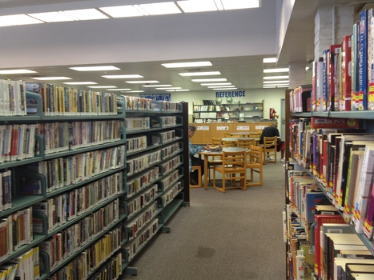
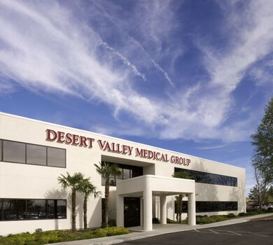

Youssef Abdelmasih
My name is Youssef Abdelmasih and I am currently a student at the University of California, Riverside and I plan on graduating with a degree in Biology (Bachelor’s of Science) in the spring of 2022. During my years at University of California, Riverside, I spent a lot of time volunteering and joining clubs in order to increase my experience and background knowledge. I also took a diverse variety of classes at UCR in order to learn new concepts, and to be introduced with new ideas. Sadly, due to the COVID-19 pandemic, most of these activities were halted or shifted to an online format.
Despite these circumstances, I volunteered in the medical/ surgical department at Desert Valley Hospital here in Victorville, California, where I assisted many of the CNAs with their tasks such as bed changes, taking vitals, answering call lights, and passing out food/water. I also volunteered in the check in department during the height of the pandemic, in order to assist visitors and workers with the check in process. There was also a period in the pandemic where there was a shortage of volunteers in the vaccine department at Victor Valley College and I was able to serve my community by covering the days where it was short staffed. I also volunteer at my church as a Sunday school servant where I teach 5th and 6th grade children bible study and afterwards proctor them while they play on the playground and basketball courts.
Lastly, I come from a diverse background as I am from Egypt. I am able to speak English and Arabic fluently, and I am in the process of learning Spanish as I took 4 years of Spanish at University Preparatory High school. I have a commitment to a career in healthcare as I have devoted all of my time towards my education at the University of California, Riverside and other volunteering services. I will continue to dedicate the same amount of effort towards college and my future studies, since I have seen the benefits that a college education provides and I know that I will make responsible use of this opportunity.
Experience
Library Volunteer
• Tutored students
• Organized books
• Preparing arts and crafts programs
Hospital Volunteer
• Responsible for checking in workers and visitors
• Assisting Patients
Sales Manager
• Organized inventory
• Assisted customers
• rearranged stocked items
• Manage transactions
Education
UC Riverside
Portfolio

